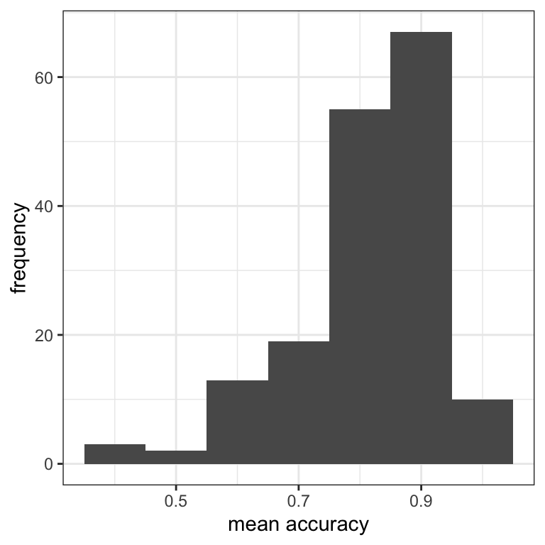
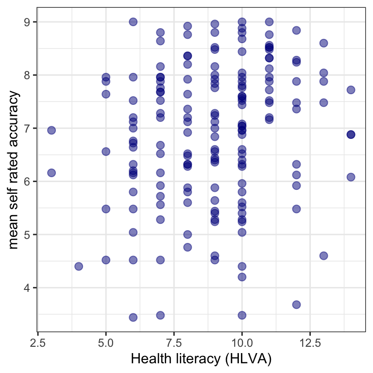

1 PSYC122 Part 2 Week 16
Welcome to your overview of the materials and guidance you will work with in PSYC122 Week 16.
We will complete four classes in weeks 16-19. These classes are designed to help students to revise and put into practice some of the key ideas and skills you have been developing in the first year research methods modules PSYC121, PSYC123 and PSYC124.
We will do this in the context of a live research project with potential real world impacts: the Clearly understood project.
- Our focus will be on what makes it easy or difficult for people to understand written health information.
We encounter written health information all the time: in warnings signs, on medication labels, in clinics when we go to see the doctor, and online when we research things we are worried about. It is not always easy to understand this information. The problem is that it is unclear how health information should be communicated. As psychologists, we can help to improve health communication.
In these classes, we will complete a research project to answer the research questions:
- What person attributes predict success in understanding?
- Can people accurately evaluate whether they correctly understand written health information?
We will present our PSYC122 lessons in the context of this research project because we think that this context will help you to make sense of the data, and to see why we ask you to practice the skills we are teaching.
We will be revisiting some of the ideas and techniques you have seen introduced in previous classes. This is to give you the opportunity to revise and consolidate your learning. We will extend your development with some new ideas, to strengthen your skills.
Ultimately, we aim to contribute new findings from the data we will collect together. These new findings will, we hope, help to make the provision of health advice a bit more useful in future.
1.0.1 Our learning goals
In Week 16, we will ask you to do three things.
First, we will ask you to do a pre-lab activity that involves completing a survey.
- Completing the survey will help you to make sense of the numbers you will be working with in the activities.
- Completing the pre-lab activity will help to teach you about the challenges of measurement, a key aspect of the scientific thinking skills we will help you to develop.
Second, we will ask you to do a set of practical tasks in the lab activity that are designed to consolidate your learning on data visualization.
- We will be:
- Using histograms to examine the distributions of variables;
- Learning to edit the histograms to present them professionally.

- We will be:
- Using scatterplots to examine the association of variables;
- Learning to edit the plots to present them professionally.

Third, we will ask you to think critically about predictions about potential associations between measures of participant attributes and measures of understanding of health information.
- We will use correlations to test predictions about associations and thus answer research questions.
1.1 Your resources
You will see – below – links to the lectures, information about the data we will analyze, and an explanation of the activities.
All the links to the lectures, and everything you need for your practical work class can also be found in the Week 16 files folder on Moodle, here:
1.1.1 Lectures: video recordings
The lecture material for this week is presented in four short parts.
Click on a link and your browser should open a tab showing the Panopto video for the lecture part. (You will need to be on campus or logged in to the university VPN to get access to the videos.)
The lecture is designed to give you an overview of:
- What we are doing in weeks 16-20, and how and why you will develop your critical thinking skills;
- A summary of the health communication project, and the ideas we assume to develop our hypotheses;
- How we visualize and think about distributions and associations;
- And how we use R to estimate and test correlations.
To work with the recordings:
- Watch the video parts right through.
- Use the printable versions of the slides (provided on Moodle) to make notes.
- Try out the coding exercises in the how-to and the workbook (see Section 1.1.5.1) to see for yourself how you can construct visualizations and do analyses.
1.1.2 Links to other classes
We do not provide further reading for this class but you will find it helpful to revise some of the key ideas you have been learning about PSYC122 and in other modules.
- The lectures in PSYC123 on: (week 1) the scientific method; (week 2) reliability and validity; (week 3) experimental design, especially between-subjects studies; (week 6) hypothesis testing; and (week 9) precise hypotheses.
- The lecture in PSYC122 on (week 11) correlation.
1.1.3 Pre-lab activity 1
In weeks 16-19, we will be working together on a research project to investigate how people vary in their response to health advice.
Completing the project involves collecting responses from PSYC122 students.
To enter your responses, we invite you to complete a short survey.
Complete the survey by clicking on the link here
In our week 19 class activity, we will analyze the data we collect here.
1.1.3.1 Survey information
The survey asks you to:
- complete some questions about who you are;
- and then answer some questions about what you know about some English words, about what you know about health matters, and about how you approach reading.
The survey then asks you to:
- read five short extracts from patient information leaflets about different kinds of health issue;
- respond to some multiple choice questions about each extract;
- and rate how well you think you understand the advice.
The survey should take about 20 minutes to complete. Some people will take less time, and some people might take a little more time.
Taking part in the survey is completely voluntary. You can stop at any time without completing the survey if you do not want to finish it. If you do not want to do the survey, you can do an alternative activity (see below).
All responses will be recorded completely anonymously.
1.1.4 Pre-lab activity 1 alternative
If you do not want to complete the survey, we invite you to read the pre-registered research plan for the PSYC122 health advice research project.
1.1.5 Pre-lab activity 2: Getting ready for the lab class
1.1.5.1 Get your files ready
Download the 122-22-w16_for-students.zip files you need and upload them to your RStudio Server.
The folder includes data files:
study-one-general-participants.csvstudy-two-general-participants.csv
and the code files:
2022-23-PSYC122-w16-how-to.R2022-23-PSYC122-w16-workbook.R
Alternatively, you can instead download the resources you need from the module Moodle page for PSYC122:
1.1.5.2 What is in the how-to and workbook.R files?
You have been getting used to working with .R script files.
- Now our aim is to make sure you can work with code, and write notes in the files.
- In the
workbookyou use for the lab activity, we identify tasks and questions, and leave you spaces where you can write code or answers.
In both the .R files:
2022-23-PSYC122-w16-how-to.R2022-23-PSYC122-w16-workbook.R
we will take things step-by-step.
We split .R scripts into parts, tasks and questions:
- different parts for different phases of the analysis process;
- different tasks for different steps in each phase;
- different questions to examine different ideas or coding steps.
- Make sure you start at the top of the
.Rfile and work your way, in order, through each task. - Complete each task before you move on to the next task.
1.1.6 Review the how-to guide
The how-to guide comprises an .R file 2022-23-PSYC122-w16-how-to.R with code and advice. The code in the .R file was written to work with the data file:
study-one-general-participants.csv.
We show you how to do everything you need to do in the lab activity (Section 1.1.7) in the how-to guide.
- Start by looking at the
how-toguide to understand what steps you need to follow in the lab activity.
1.1.7 Lab activity
In the lab activity .R file 2022-23-PSYC122-w16-workbook.R, you will work with data from a study about how people respond to guidance about a variety of health topics (general topics):
study-two-general-participants.csv
The data are similar in format to the response data we are collecting as part of the PSYC122 project.
1.1.7.1 Tasks
In the activity workbook, we are going to work through the following tasks.
- Empty the R environment – using
rm(list=ls()) - Load relevant libraries – using
library() - Read in the data file – using
read_csv() - Inspect the data – using
head()andsummary() - Change the type classification of a variable in the data – using
as.factor() - Draw histograms to examine the distributions of variables – using
ggplot()andgeom_histogram() - Edit the appearance of one variable histogram plot step-by-step
- Draw scatterplots to examine the associations between some variables – using
ggplot()andgeom_point() - Draw scatterplots to examine different variables
- Edit the appearance of a plot step-by-step
- Examine associations between variables using correlation.
The activity 2022-23-PSYC122-w16-workbook.R file takes you through the tasks, one by one.
If you are unsure about what you need to do, look at the advice in 2022-23-PSYC122-w16-how-to.R on what steps you have to follow, and examples on how to write the code.
You will see that you can match a task in the activity to the same task in the how-to. The how-to shows you what function you need and how you should write the function code.
- Don’t forget: You will need to change the names of the dataset or the variables to complete the tasks in the activity.
This process of adapting demonstration code is a process critical to data literacy and to effective problem solving in working with data in psychological science.
1.1.7.2 What is in the data files
Each of the data files we will work with has a similar structure, as you can see in this extract.
| participant_ID | mean.acc | mean.self | study | AGE | SHIPLEY | HLVA | FACTOR3 | QRITOTAL | GENDER | EDUCATION | ETHNICITY |
|---|---|---|---|---|---|---|---|---|---|---|---|
| studytwo.1 | 0.4107143 | 6.071429 | studytwo | 26 | 27 | 6 | 50 | 9 | Female | Higher | Asian |
| studytwo.10 | 0.6071429 | 8.500000 | studytwo | 38 | 24 | 9 | 58 | 15 | Female | Secondary | White |
| studytwo.100 | 0.8750000 | 8.928571 | studytwo | 66 | 40 | 13 | 60 | 20 | Female | Higher | White |
| studytwo.101 | 0.9642857 | 8.500000 | studytwo | 21 | 31 | 11 | 59 | 14 | Female | Higher | White |
You can use the scroll bar at the bottom of the data window to view different columns.
You can see the columns:
participant_IDparticipant codemean.accaverage accuracy of response to questions testing understanding of health guidancemean.selfaverage self-rated accuracy of understanding of health guidancestudyvarianble coding for what study the data were collected inAGEage in yearsHLVAhealth literacy test scoreSHIPLEYvocabulary knowledge test scoreFACTOR3reading strategy survey scoreGENDERgender codeEDUCATIONeducation level codeETHNICITYethnicity (Office National Statistics categories) code
It is always a good idea to view the dataset – click on the name of the dataset in the R-Studio Environment window, and check out the columns, scroll through the rows – to get a sense of what you are working with.
1.1.8 Answers
You can now download the answers version of the activity workbook .R here.
The answers version presents my answers for questions, and some extra information where that is helpful.